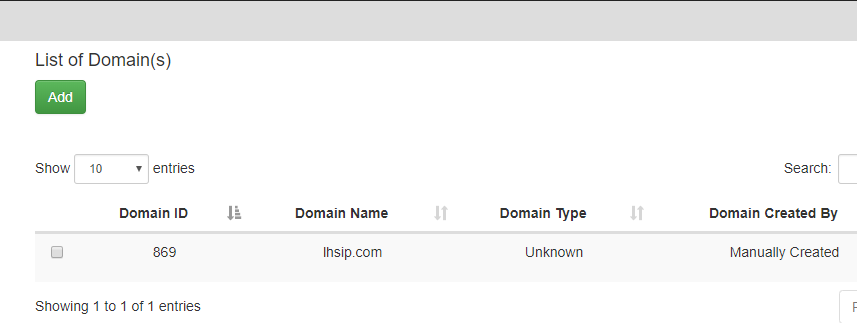
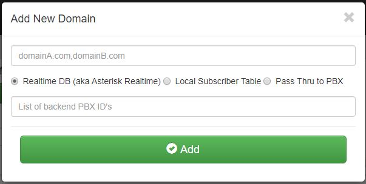
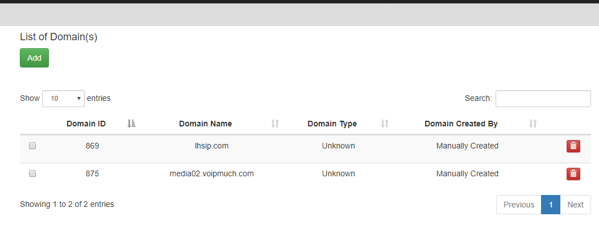

1.4.1.5. Adding a Domain
To add a domain click on Domains then click the green add button.
Fill in the domain name. (Note: You can create 1 or more domains by separating them with commas).
Select Realtime DB or Local Subscriber table (for multiple domains)
Select Pass Thru to PBX (single domain).
Note: Details can be found in Realtime DB if you want to ensure that the Kamailio configuration file is setup to point to the Asterisk Realtime database configuration. Details on how to populate the table can be found in the Local Suscriber table if you want to use the built in subscriber table that’s part of Kamailio. Use the pass thru to register info to the FreePBX server so that you don’t have to change how authentication is done.
For the List of backend PBX ID’s you should use the ID assigned to each PBX that you want to be part of that domain. Such as naming the ID number thats assigned to media-02.voipmuch.com for example in PBX(s) and Enpoints.
Click ADD
You will then be returned back to the List of domains page and you should see your new domain added. You can delete this domain by clicking the red trash can to the right of the page.

Be sure to click the Reload Kamailio button to apply changes.